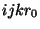
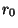
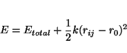

Next: 23. Hybrid Calculations with
Up: user
Previous: 21. Geometry Optimization with
Contents
The constraints directive allows the user to specify which constraints
should be imposed on the system during the geometry optimization. Currently
such constraints are limited to fixed atom positions and
harmonic restraints (springs) on the distance between the two atoms. The
general form of constraints block is presented below:
CONSTRAINTS [string name ] \
[clear] \
[enable||disable] \
[fix atom <integer list>] \
[spring bond <integer atom1> <integer atom2> <real k> <real r0> ]
END
The keywords are described below
- name - optional keyword that associates a name with a given set of
constraints. Any unnamed set of constraints will be given a name ''default''
and will be automatically loaded prior to a calculation. Any constraints
with the name other than ''default'' will have to be loaded manually using
SET directive. For example,
CONSTRAINTS one
spring bond 1 3 5.0 1.3
fix atom 1
END
#the above constraints can be loaded using set directive
set constraints one
....
task ....
- clear - destroys any prior constraint information. This may be
useful when the same constraints have to be redefined or completely removed from
the runtime database.
- enable||disable - enables or
disables particular set of constraints without actually removing the
information from the runtime database.
- fix atom - fixes atom positions during geometry optimization. This
directive requires an integer list that specifies which atoms are to be
fixed. This directive can be repeated within a given constraints block.
To illustrate the use "fix atom" directive let us
consider a situation where we would like to fix atoms 1, 3, 4, 5, 6 while performing an optimization on some hypothetical system.
There are actually several
ways to enter this particular constraint.
There is a straightforward option which requires the most typing
constraints
fix atom 1 3 4 5 6
end
Second method uses list input
constraints
fix atom 1 3:6
end
Third approach illustrates the use of multiple fix atom directives
constraints
fix atom 1
fix atom 3:6
end
- spring bond <> - places a spring with a spring constant and equilibrium length 
between atoms
 and
and  (all in atomic units). Please note that this type of constraint adds an additional term to
the total energy expression
(all in atomic units). Please note that this type of constraint adds an additional term to
the total energy expression

This additional term forces the distance between atoms and to be in the vicinity of but never exactly that. In general
the spring energy term will always have some nonzero residual value, and this has to be accounted for when comparing total
energies. The "spring bond" directive can be repeated within a given constraints block. If the spring between the same pair of atoms
is defined more than once, it will be replaced by the latest specification in the order it appears in the input block.
Next: 23. Hybrid Calculations with
Up: user
Previous: 21. Geometry Optimization with
Contents
Edoardo Apra
2004-05-25